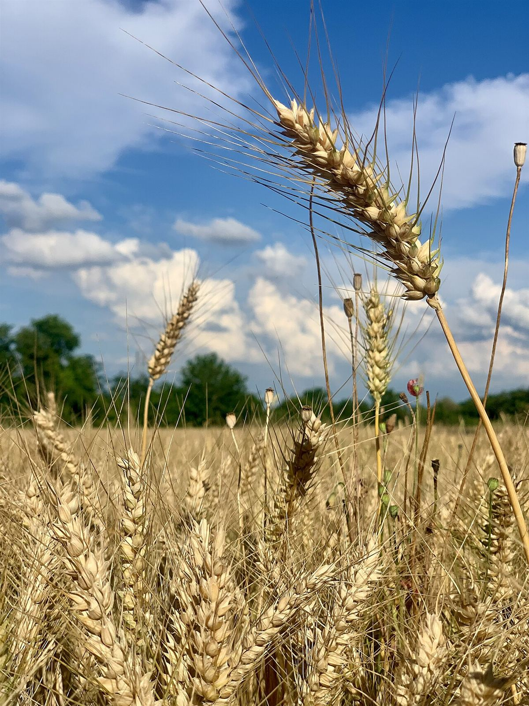
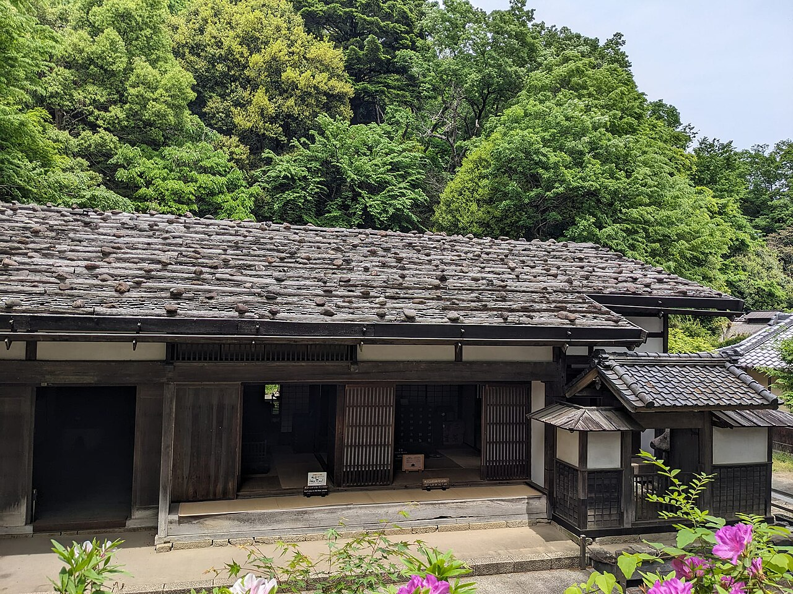
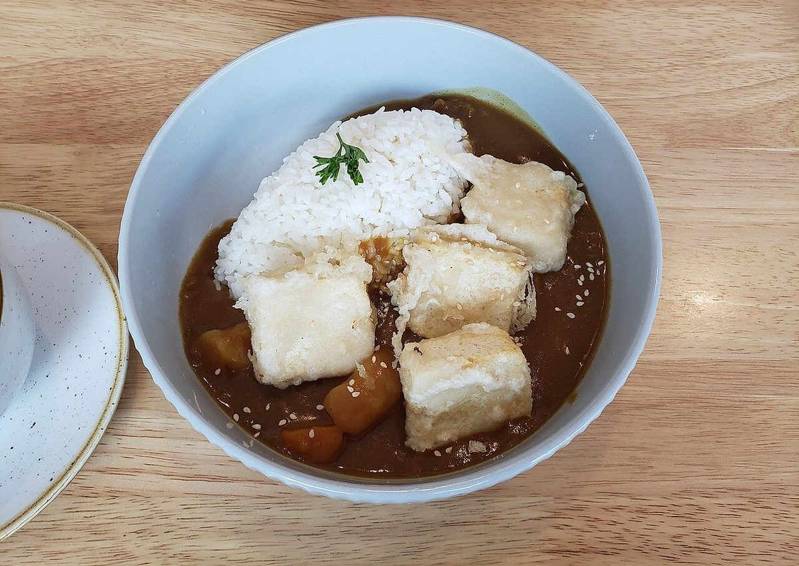
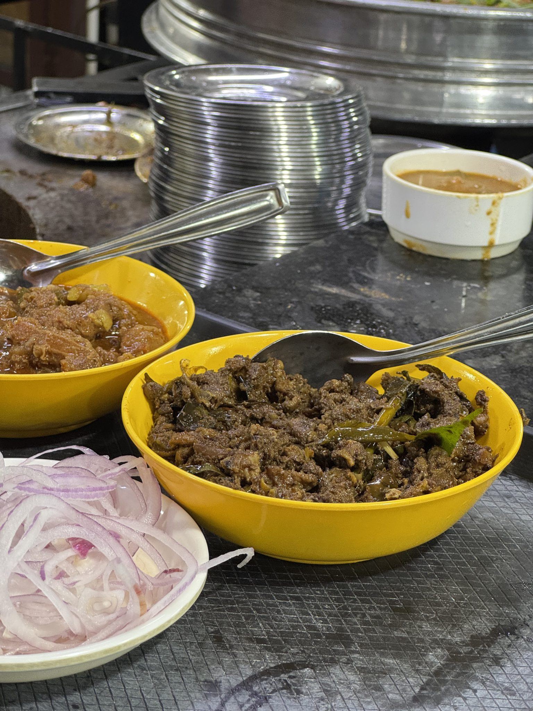
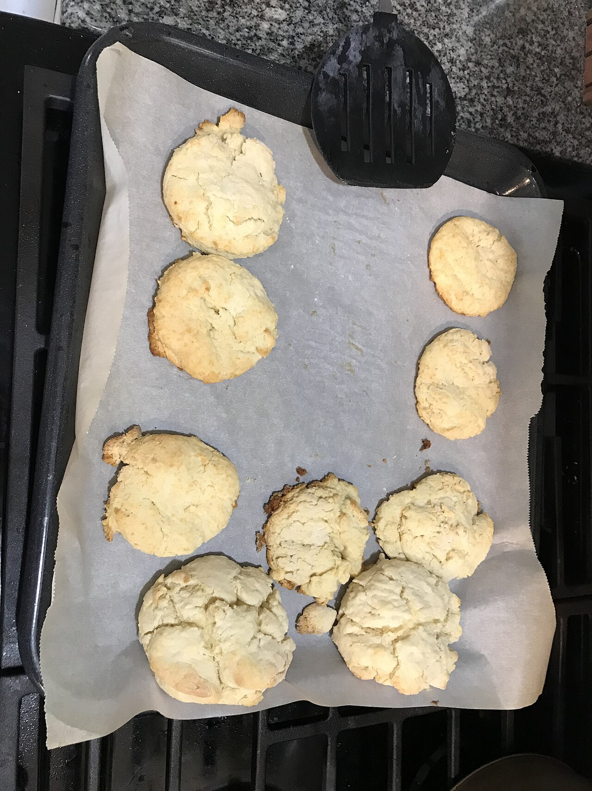
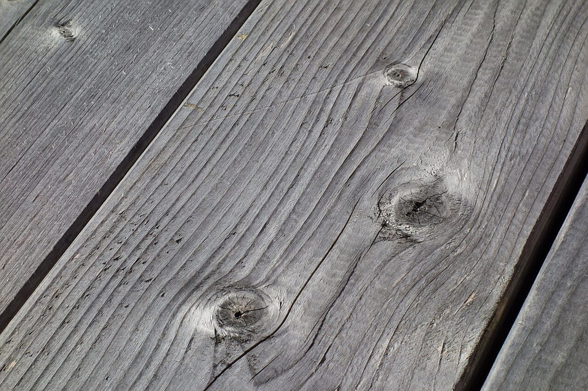
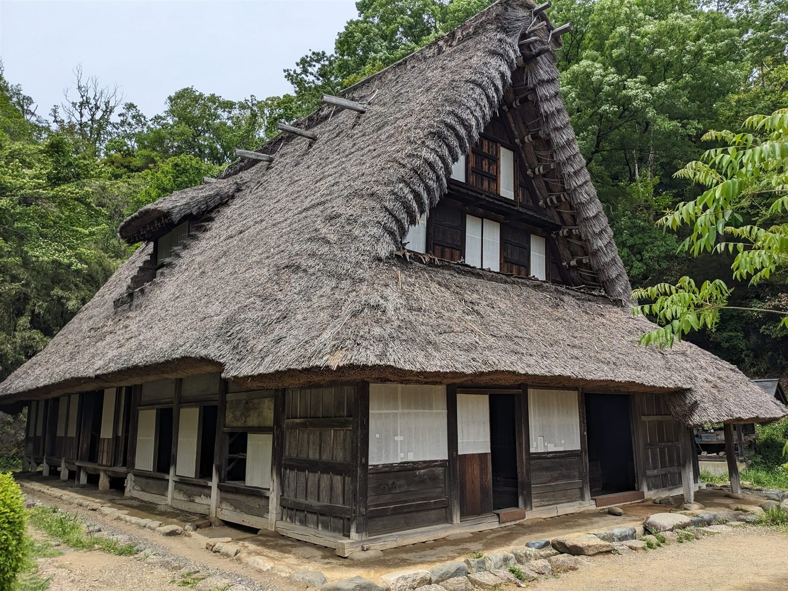

ABOUT
古民家で味わう、小麦とスパイスの食堂
Nest Spaceは、堺市堺区南島町にある、古民家をリノベーションした多国籍食堂です。2022年6月21日にオープンし、スパイスを使った多国籍のお料理や、スコーンなどの焼き菓子、スイーツを楽しめるカフェとしても紹介されています。写真スタジオの顔も持つお店として紹介されています。
お店は店主おひとりで営まれていると紹介されています。急がず、ゆっくり流れる時間を味わう場所です。

Ears of wheat / Daniela M. / CC BY-SA 4.0
- 建物 古民家をリノベーション
- オープン 2022年6月21日
- お料理 小麦とスパイスの多国籍洋食
- 最寄り 七道駅から約400m(食べログ記載)
店名の意味は確認できていません。制作側のイメージとして、「Nest」を古い家の中に生まれる居場所(巣)と受け取り、このページの配色や言葉を選びました。

Japanese traditional house with wooden roof / タクナワン / CC0 1.0

Garden path, Harlow Museum & Walled Gardens, Essex 01 / Acabashi / CC BY-SA 4.0
MENU
スパイスの一皿と、焼き菓子
ご紹介記事では、スパイスを使ったランチ、自家製パスタのラザニアとフォカッチャ、スコーン、スイーツ、季節のかき氷の企画などが紹介されています。内容は日替わり・季節で変わるため、最新はInstagramでご確認ください。
ランチ
スパイスを使った多国籍の洋食。
価格 準備中
焼き菓子・スイーツ
スコーンなどの焼き菓子。
価格 準備中
カフェ
お茶の時間にも。
詳細 準備中

Deep-fried Tofu Japanese Curry Rice / Andy Li / CC0 1.0
Chinese Chicken Curry & Egg Fried Rice / Graham Steel / パブリックドメイン(PDM 1.0)

Two vibrant yellow bowls hold spiced dishes with herbs and curry / Vishnu Chandra / CC0 1.0

Cream Scones 2 - after baking / Infrogmation of New Orleans / CC BY-SA 2.0

Lemon Scone with Jam / Benson Kua / CC BY-SA 2.0

The cup of coffee on a wooden table / Artem Beliaikin / CC BY 2.0

Weatherworn planks on top of wooden table / W.carter / CC0 1.0

Japanese traditional architecture Gassho-zukuri / タクナワン / CC0 1.0
写真はすべてイメージです。実際のメニューとは異なります。
VOICE
口コミ(イメージ例)
イメージ例
古い家の落ち着いた空気で、時間を忘れてゆっくりできました。スパイスの香りに食欲がわきます。
イメージ例
おやつの時間にスコーンとお茶をいただきたくなる場所です。また季節ごとに訪れたいです。
イメージ例
店主さんの手づくり感が伝わる小さなお店。最新の営業日はInstagramで確認してから行きます。
上の3件は制作側が作った創作で、実在のお客様の声ではありません。
ACCESS
お店の情報
| 住所 | 〒590-0904 大阪府堺市堺区南島町２丁５１−１ |
|---|---|
| 電話 | 準備中 |
| 営業時間 | 準備中(変更があるためInstagramで最新をご確認ください) |
| 定休日 | 準備中 |
| @nest_space_ |